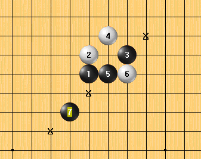
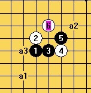

残月二打求地毯思路。
#1 残月二打求地毯思路。 作者：陨落之城 发表时间：2011-7-3 13:16:37
用手机拍的，不知道能不能看清？请教如何杀这个12？或者前面错了？如果，图看不清，我再弄个坐标：H8H9J9I10I8J8K10L11G9G6F9F8#2 Re:残月二打求地毯思路。 作者：岑小鱼 发表时间：2011-7-3 13:33:40
=======上图对应的爱五子棋谱代码如下，以便你拆解：========
h8h9j9i10i8j8g6h7f7
======================================================
这样没有任何问题。
［此帖子已被 岑小鱼 在 2011-7-3 13:38:44 编辑过］
［ 陨落之城 于 2011-7-10 9:04:10 时花20金币送鲜花一朵］
#3 Re:残月二打求地毯思路。 作者：陨落之城 发表时间：2011-7-3 13:39:14
LS8下挡可以杀。#4 Re:Re:残月二打求地毯思路。 作者：岑小鱼 发表时间：2011-7-3 13:41:05
引用：
原文由 陨落之城 发表于 2011-7-3 13:39:14 :
LS8下挡可以杀。之前的套用没有仔细想...忽然觉得有问题，改了。
具体到8下挡这个变化我一直不会杀，，，求细节。。。
#5 Re:残月二打求地毯思路。 作者：陨落之城 发表时间：2011-7-3 13:48:32
H8H9K9I10I8K8L10H7K11L11M9N8K12#6 Re:残月二打求地毯思路。 作者：陨落之城 发表时间：2011-7-3 13:50:59
你说的跳7如果8上挡呢？#7 Re:Re:残月二打求地毯思路。 作者：岑小鱼 发表时间：2011-7-3 13:53:52
引用：
原文由 陨落之城 发表于 2011-7-3 13:48:32 :
H8H9K9I10I8K8L10H7K11L11M9N8K12
这个..对不上号啊
估计是这样吧。。。
=======上图对应的爱五子棋谱代码如下，以便你拆解：========
h8h9j9i10i8j8k10h7j11k11l9m8j12j13
======================================================发详细点哈
开动神器。。。找到了
［此帖子已被 岑小鱼 在 2011-7-3 13:55:58 编辑过］
［此帖子已被 岑小鱼 在 2011-7-3 13:58:58 编辑过］
#8 Re:残月二打求地毯思路。 作者：岑小鱼 发表时间：2011-7-3 13:56:54
=======上图对应的爱五子棋谱代码如下，以便你拆解：========
h8h9j9i10i8j8g6k10f7h10j10i9k7h7j6
======================================================
［ 陨落之城 于 2011-7-10 9:04:46 时花20金币送鲜花一朵］
#9 Re:残月二打求地毯思路。 作者：陨落之城 发表时间：2011-7-3 14:03:05
这个终结者就可以扫出来了，15在4上面。手机发帖不方便。#10 Re:残月二打求地毯思路。 作者：岑小鱼 发表时间：2011-7-3 14:03:42
=======上图对应的爱五子棋谱代码如下，以便你拆解：========
h8h9j9i10i8j8k10h7j11l11l9i12k9m9l8m7
======================================================
这样呢? 黑11如何攻击?详细点哈....
#11 Re:残月二打求地毯思路。 作者：陨落之城 发表时间：2011-7-3 14:07:00
手机送不了花，还是要谢谢你的这个7。#12 Re:Re:残月二打求地毯思路。 作者：岑小鱼 发表时间：2011-7-3 14:09:24
引用：
原文由 陨落之城 发表于 2011-7-3 14:03:05 :
这个终结者就可以扫出来了，15在4上面。手机发帖不方便。
手机发谱的方式:(iwzq)...坐标....（/iwzq） 其中() 实际操作中要换成中括号[]
#13 Re:残月二打求地毯思路。 作者：死劲哭 发表时间：2011-7-3 14:46:59
=======上图对应的爱五子棋谱代码如下，以便你拆解：========
h8h9j9i10i8j8g6h7f7f6e8d9e5g5e7
======================================================
不知道这样下，与您这题目是否有关联
#14 Re:Re:残月二打求地毯思路。 作者：屏蔽 发表时间：2011-7-3 15:03:25
引用：
原文由 岑小鱼 发表于 2011-7-3 14:03:42 :这样呢? 黑11如何攻击?详细点哈....
=======上图对应的爱五子棋谱代码如下，以便你拆解：========
h8h9j9i10i8j8k10h7j11l11l9i12l7k9m7m8l6
======================================================
［ 岑小鱼 于 2011-7-3 15:07:07 时花20金币送鲜花一朵］
#15 Re:残月二打求地毯思路。 作者：死劲哭 发表时间：2011-7-3 15:09:17
这就对了嘛，李一同学这种做法才比较符合身份。赞一个#16 Re:残月二打求地毯思路。 作者：陨落之城 发表时间：2011-7-3 15:43:52
其实我是想知道8上挡能不能杀。#17 Re:残月二打求地毯思路。 作者：陨落之城 发表时间：2011-7-3 15:46:27
#18 Re:残月二打求地毯思路。 作者：陨落之城 发表时间：2011-7-3 15:48:17
哇，手机真的可以发谱。#19 Re:残月二打求地毯思路。 作者：死劲哭 发表时间：2011-7-3 17:08:47
=======上图对应的爱五子棋谱代码如下，以便你拆解：========
h8h9j9j8g10h11i9a1g9
======================================================
应该都可以吧
#20 Re:Re:残月二打求地毯思路。 作者：屏蔽 发表时间：2011-7-3 17:37:26
引用：
原文由 陨落之城 发表于 2011-7-3 15:46:27 :
我试试看。这个6用哪个7？
=======上图对应的爱五子棋谱代码如下，以便你拆解：========
h8h9j9j8g10h11i7j11g7g11i11i9h10e9j6g9f9
======================================================
用这个7。前几天拆过了，没扫地毯，不过问题应该不大。
其他7不清楚。
［ 陨落之城 于 2011-7-10 9:05:18 时花20金币送鲜花一朵］
#21 Re:残月二打求地毯思路。 作者：陨落之城 发表时间：2011-7-3 17:37:41
这个5其他6都解决了。不要说应该，可以就是可以，不可以就是不可以。#22 Re:残月二打求地毯思路。 作者：屏蔽 发表时间：2011-7-3 17:39:03
那我去拿06扫一下……
#23 Re:残月二打求地毯思路。 作者：岑小鱼 发表时间：2011-7-3 17:52:26
做地毯的话估计头痛....
我还是先把1打弄完....
#24 Re:残月二打求地毯思路。 作者：陨落之城 发表时间：2011-7-3 17:54:07
汗，其实我是跟使劲哭说的，没有说你。#25 Re:Re:残月二打求地毯思路。 作者：岑小鱼 发表时间：2011-7-3 18:07:35
引用：
原文由 Type 发表于 2011-7-3 17:54:24 :
20楼的7是最简单的必胜亮点啊....
就是说 第一.已经做出了地毯.
第二.还有其他必胜点.....?
#26 Re:残月二打求地毯思路。 作者：小丸.net 发表时间：2011-7-3 18:18:36
 残水弱6.rar
残水弱6.rar看看这个行不行。
［ 踵酃 于 2011-7-3 20:44:56 时花20金币送鲜花一朵］
［ 陨落之城 于 2011-7-10 9:05:44 时花20金币送鲜花一朵］
#27 Re:残月二打求地毯思路。 作者：陨落之城 发表时间：2011-7-3 18:20:29
谢谢楼上，这个6已经解决。#28 Re:残月二打求地毯思路。 作者：死劲哭 发表时间：2011-7-3 19:02:55
是呀大师，他怎么敢说您呢。死劲哭那么好欺负，当然是谁想骂几句就骂几句了。
不过以后就没我垫背了，因为他开的帖子我是不敢在进的了
［ 踵酃 于 2011-7-3 20:45:38 时花20金币送鲜花一朵］
#29 Re:残月二打求地毯思路。 作者：陈唯一 发表时间：2011-7-3 19:26:59
6好多杀哦#30 Re:残月二打求地毯思路。 作者：陨落之城 发表时间：2011-7-3 19:41:59
我的意思是你说的这两个7你拆过吗？如果拆过，且可以必胜，我会说你吗？#31 Re:Re:残月二打求地毯思路。 作者：屏蔽 发表时间：2011-7-3 19:58:36
引用：
原文由 陈唯一 发表于 2011-7-3 19:26:59 :
6好多杀哦
能问下你这个谱，a2是和a3基本一致还是和a1基本一致？
#32 Re:残月二打求地毯思路。 作者：陈唯一 发表时间：2011-7-3 20:01:47
拆过，肯定必胜，你想赌什么？#33 Re:Re:残月二打求地毯思路。 作者：陈唯一 发表时间：2011-7-3 20:05:40
引用：不要以为你拆不了的，就没人能拆。不要以为你下棋时间长就棋力强。比你强的人到处都有。
原文由 陨落之城 发表于 2011-7-3 19:41:59 :
我的意思是你说的这两个7你拆过吗？如果拆过，且可以必胜，我会说你吗？
#34 Re:Re:Re:残月二打求地毯思路。 作者：岑小鱼 发表时间：2011-7-3 20:11:05
引用：
原文由 陈唯一 发表于 2011-7-3 20:05:40 :引用：
原文由 陨落之城 发表于 2011-7-3 19:41:59 :
我的意思是你说的这两个7你拆过吗？如果拆过，且可以必胜，我会说你吗？不要以为你拆不了的，就没人能拆。不要以为你下棋时间长就棋力强。比你强的人到处都有。
请看前面...不要抢座....
#35 Re:Re:Re:残月二打求地毯思路。 作者：陈唯一 发表时间：2011-7-3 20:12:58
引用：
原文由 屏蔽 发表于 2011-7-3 19:58:36 :引用：
原文由 陈唯一 发表于 2011-7-3 19:26:59 :
6好多杀哦能问下你这个谱，a2是和a3基本一致还是和a1基本一致？
小兄弟，三个点都不一样哦。不可硬要找相同点的话，肯定是可以的
#36 Re:残月二打求地毯思路。 作者：陨落之城 发表时间：2011-7-3 20:15:27
好了，谢谢屏蔽老师，这个6地毯了。#37 Re:残月二打求地毯思路。 作者：小丸.net 发表时间：2011-7-3 20:39:03
发个谱，多少给朵花塞。。。。没有功劳也有苦劳咯。。。。
PS:来块砖也成。。。
［此帖子已被 小丸.net 在 2011-7-3 20:39:19 编辑过］
#38 Re:残月二打求地毯思路。 作者：逆刃 发表时间：2011-7-3 20:50:43
这个早有结论了吧，直接要个谱就行了撒，这个弱4的地毯有不值钱，我早看到就发上来了，呵呵。#39 Re:残月二打求地毯思路。 作者：陨落之城 发表时间：2011-7-3 21:00:59
手机上的，送不了花。#40 Re:残月二打求地毯思路。 作者：岑小鱼 发表时间：2011-7-4 12:49:04
为神秘老提示我不够金币送花????#41 Re:残月二打求地毯思路。 作者：陈唯一 发表时间：2011-7-5 11:04:56
=======上图对应的爱五子棋谱代码如下，以便你拆解：========
h8h9j9j8i8i10k10l11g8g6f10o1f9n1i7
======================================================这也有三种杀死法